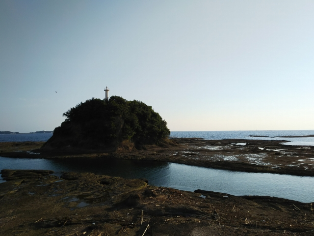

2021（R3）7月30日 ゆりの山温泉
夏はぬる湯の温泉が呼んでいる。久々に南紀方面に行ってきました。
※最後に、鉄分ほしい人へのスペシャル画像をつけてます
朝の和歌山駅。前回ほめたデザインの電車が紀勢線
にも入ってました。
しかし乗ってみたら・・・
白浜で特急通過待ち。御坊で乗り換え、紀伊田辺で
乗り換えても、全部この車両・・・
ロングシートなんですけど・・・
長時間、ずっとこの車両とは、最悪です。
車窓はええのに、地元客は日よけをおろしまくるの
で困ったもんです。それにこの車両、窓がでかいか
ら、一人でもおろしたいヤツがおったら下ろされる
という最悪な状況。
湯川駅に到着。
海沿いのいい雰囲気の駅で、うれしい驚きです。
駅から徒歩１０分程度のところに湯川温泉があって
昔はにぎわったみたです。
この駅舎は昭和４３年築だそうで、同い年やん！
今日の目的は、湯川温泉ではなく、その近くにある
ゆりの山温泉です。
途中で見えた鉄橋も、いい雰囲気です。
ゆりの山温泉に到着。
一軒家の温泉です。
わかりにくいですが、お湯が沸きまくってます。ぼこぼこっと、音も
すごいです。なんせ、道から聞こえてくるぐらいですから。
そして、全てのカランから、お湯が出っ放し。
それぐらいのとんでもない湯量でした。
お湯も、夏はうれしいぬる湯で、暑い中、歩いてきた甲斐ありました！
それも貸切状態で！
帰りも、あの車両や・・・
（安心して下さい！キレてないので）
すれ違う電車も、全てこの車両。
是非、七尾線を見習って、クロスシート車の導入を
検討してほしいものです。
紀伊田辺駅に到着。
前の駅舎のほうが、よっぽど良かった・・・
ここからはバスでちょっと寄り道。
前から一度行きたかった天神崎。
日本におけるナショナル・トラスト運動発祥の地で
すね。

ちょうど干潮のタイミングで訪れることが出来る日
程を選んで来た甲斐があったかどうかは何ともいえ
ないレベルでした。
でも、来れて満足です。
あまりの暑さに、ガリガリ君を食べながら、バスを
待ってました。
来た来た。
南部駅到着。
電車は内陸を通りますが、バスは海沿いを走るので、
バスでここまで来ました。
和歌山までロングシートか・・・
新大阪で。
見慣れん列車が停まってたので近よってみると・・
・。
もしやこれは！
おおっ！銀河や。
この夏は南紀ルートでしたね。
こう見ると、やっぱドアがいまいちやなぁ・・・。
でも、いつか乗ってみたいものです。
そして、ここからはスペシャル画像です。
翌日、三宮へ。
わかりにくいですが、西へ向かう貨物列車。赤い機
関車の次位には回送のＥＦ６４？
まぁこれはおまけです。
（急に現れたので、ピントぼけてます）

この写真を、わざわざ撮りに行きました。
駅ビル建て替えで、このアングルで列車が見通せる
ようになりました。
思いのほか高速で通過したので、タイミングミスっ
てます。
ピントもあってない・・・。スマホで撮るのは、難
しいわ。
この列車は、乗ることないやろなぁ。